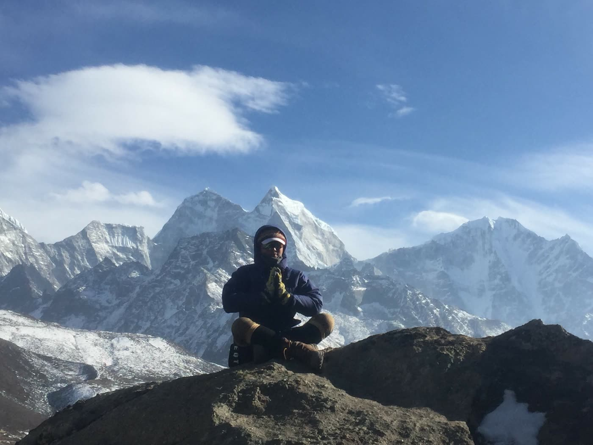
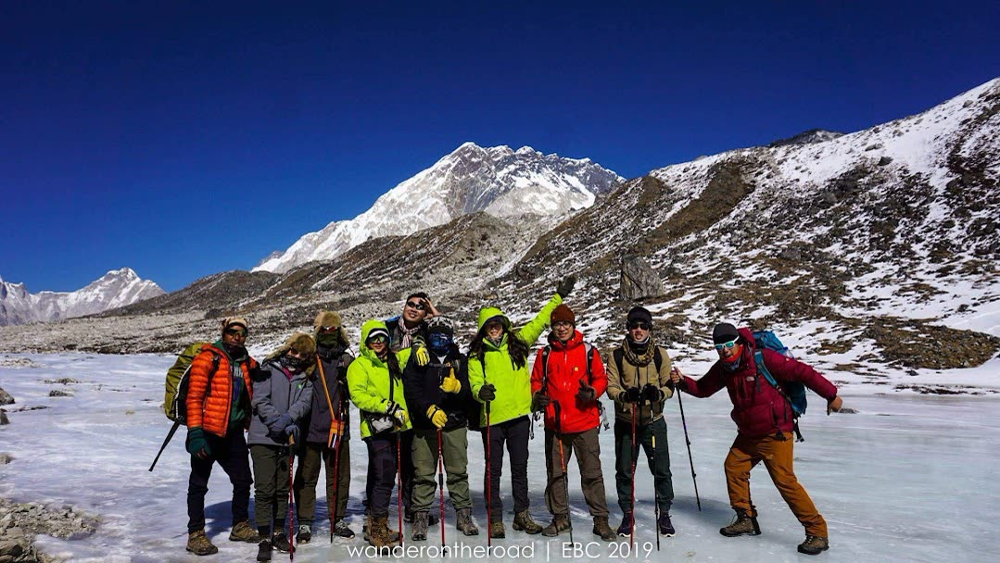
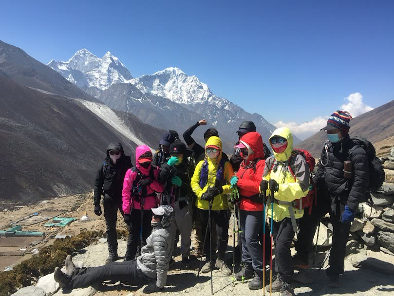
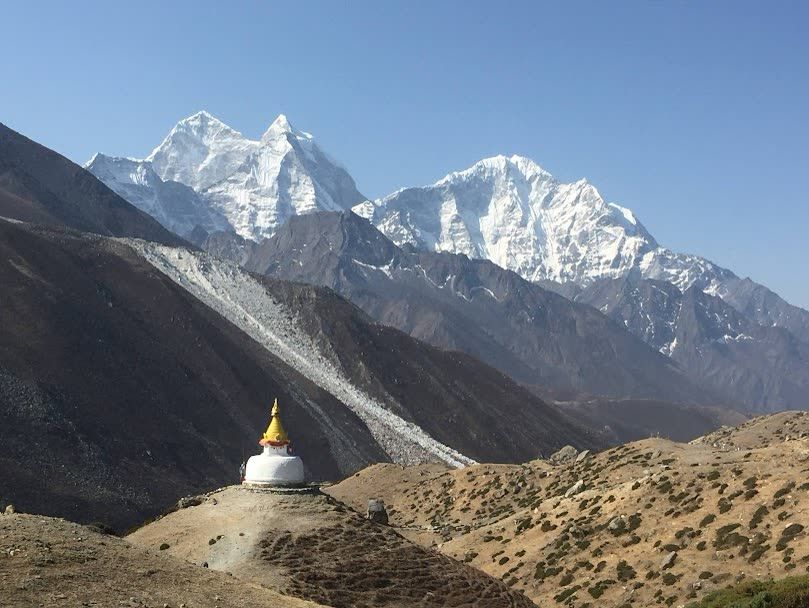
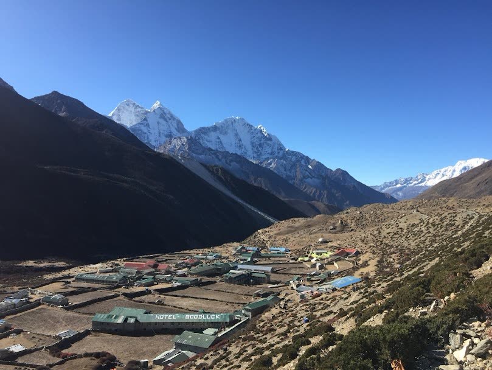
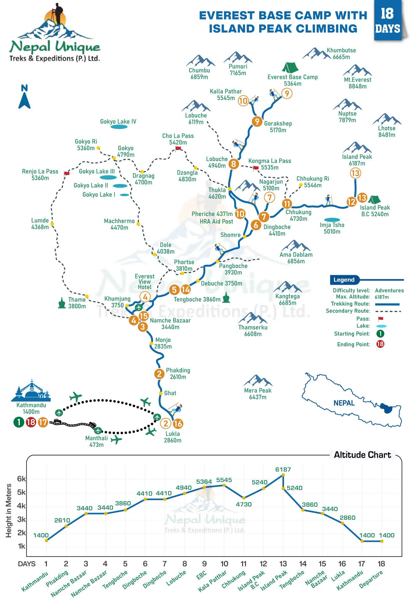

Everest Base Camp with Island Peak Climbing
Explore the ultimate adventure with our 18-day Everest Base Camp trek & Island Peak climbing package for 2025/26. Experience breathtaking Himalayan views, expert guides & seamless logistics.





Key Trip Facts
Trek Overview
Trip Highlights
Explore the ultimate adventure with our 18-day Everest Base Camp trek & Island Peak climbing package for 2025/26. Experience breathtaking Himalayan views, expert guides & seamless logistics. Book now for an unforgettable climb. Most trekkers look forward to Trekking to The Everest Base Camp and completing their journey. However, there is much more than just trekking. Taking up once in a once-in-a-lifetime opportunity with a challenge to summit the peak and experience the real mountaineering. This is what you will get in Everest Base Camp with Island Peak Climb Trekking.
This trek is not for a beginner who wants to trek and climb a peak in over 2 weeks. This is for trekkers who are willing to explore much more than just trekking in the Himalayas and take up a challenge to conquer the Island Peak. This can also be a great opportunity to experience real mountaineering in the Himalayas. And not to forget, the journey is challenging yet it's much more rewarding with all the panoramic and scenic views.
The trek to Everest Base Camp with Island Peak Climbing begins with a flight to the Lukla, the Gateway to Everest, and then a trek to Phakding. Moving further, traversing through the local community, exploring the Sherpa culture, and acclimatizing at different altitudes we reach the Everest Base Camp. From there, we navigate to get a closet view of Everest from Kalapatthar's viewpoint. Finally, with some basic training from the sherpas and guides, we will climb Island Peak and retrace our way back to Kathmandu.
Furthermore, explore the wilderness in the Himalayas, with diversified floras and faunas. Trekking on rugged terrains, with multiple uphills and downhills with fresh ample air and picturesque views of the mountain peaks, terrace fields, and hills. It will be more than just a journey, a way to enjoy yourself out in nature far away from all the hustle and bustle. Read the complete package to understand about the Everest Base Camp Trek with Island Peak Climbing trail.
Why choose us for this trek?
Nepal Unique Treks is a professional & Government-authorized Trekking Agency that has been providing organized adventure trips all over Nepal. We have some of the best teams that will make sure that you have a great trip without any hassle in every possible manner. Moreover, the guides we have in the team are government license holders and have been in this sector for over a decade.
For the past 20 years, Nepal Unique Treks has been helping domestic as well as international trekkers plan and organize their dream journeys. Our teams and the local networks all over the country have enabled us to provide the best services in every region.
We provide these services not only in Nepal but also in Bhutan and Tibet. You can customize the itinerary according to your preferences, and we will proceed accordingly on this journey. Below are some additional information on why we are the perfect choice for Everest Base Camp Island Peak Climbing:
Designing exceptional itineraries, organizing logistics, and providing knowledgeable guides are our core strengths.
Prioritizing the best experience in the entire journey, we ensure to provide you the best services in every meal served and place accommodated.
Our guides have knowledge and network in multiple regions enabling an extra layer of convenience and support in the trek.
Skilled and experienced guides will help you from the very beginning of the trek ensuring a better journey.
Permits required for Everest Base Camp Island Peak Climb
While ascending on any trekking route, we need to pass through some protected areas. Passing such locations requires the trekkers to have specific permits or passes. Upon arrival at such destination, the officials will verify our permits and only then we are allowed to enter the area. Therefore, it is crucially important to have a permit for this journey. In addition, there is a special permit, Trekker's Information Management System (TIMS) Permit which allows the government officials to track the trekkers for their well-being and safety.
For Everest Base Camp Island Peak Climb Trekking we require the following permits:
1. Sagarmatha National Park Entry Permit
2. Khumbu Pasang Lhamu Municipality Entry Permit
3. Island Peak Climbing Permit
4. Trekker's Information Management System (TIMS) Permit
Sagarmatha National Park is a protected area which is established by the Government of Nepal to protect the flora and fauna of this region. And, on our journey, we have to pass through the national park. So, we require a Sagarmatha National Park Entry Permit. Similarly to support the local community of the Khumbu Region and contribute towards the local developmental projects and infrastructures, we require a Khumbu Pasang Lhamu Municipality Entry Permit.
In addition, a permit is required to climb the Island Peak, which can be obtained from the Nepal Mountaineering Association (NMA). Moreover, it also allows monitoring of the trekkers for their safety within the protected areas. Finally, issued by government officials a TIMS Permit is a special type of permit that helps the government official track the trekkers ensuring their safety and well-being.
In Nepal Unique Treks, we help you to get these permits without any hassle. Let us streamline the process for getting these permits while you prepare for the trek.
Why Insurance is necessary for Everest Base Camp Island Peak Climb Trekking Package?
Trekking up in the Himalayas consists of multiple risks. According to the situation, there might be cases where the trekkers require emergency evacuation or medical attention. During these scenarios, insurance can become a lifesaver for you.
There are different kinds of insurance you can get before starting this journey. Some of them provide medical coverage, emergency evacuation, cancellation insurance, and many more. However, we highly recommend you take the insurance package that covers all of these.
Even though we will be scheduling our journey in a most favorable season like Spring and autumn seasons. However, there is still a possibility of some changes in the weather. A sudden change in weather can disrupt our entire trek and can lead to other emergencies as well. Therefore, to ensure things go smoothly even in emergency cases, we recommend you get the full package of insurance.
Furthermore, our guides will always be there to assist and navigate you even in emergency cases. This way we can ensure you have a great journey with all the safety. Therefore, we recommend all trekkers obtain travel insurance before ascending the Everest Base Camp Trek with the Island Peak Climbing Package.
Everest Base Camp with Island Peak Climbing Itinerary: Day by Day
18 Days program for Everest Base Camp with Island Peak Climbing. Daily timings and sequences remain flexible according to weather, flight operations, and group pace.
Day 1: Arrival in Kathmandu (1400 meters), Transfer to the Hotel, and Preparation for the Trek
Approx. 1,345 m / 4,413 ft
On the first day, our representatives will welcome you to the country of the Himalayas, Nepal. As you land at the Tribhuwan International Airport, where the representatives will welcome you with a bouquet and khaadi. From there, we will transfer you to the hotel in the Thamel area in a private vehicle. The size of the vehicle depends upon the number of people included in the group. As you enter the hotel, you will be welcomed with a welcome drink and then you can check in at your room before getting freshened up and strolling around the nearby areas. We recommend the trekkers explore different cafes, hotels, and even spas to get some relaxation from the long flight. In the evening, we invite you for a welcome dinner with a trek preparation session. In this session, the experts from Nepal Unique Treks will provide extensive details about how the Everest Base Camp with Island Peak Climbing package will be. Furthermore, you will also have chances to ask all the questions and queries you have about the trek and related information.
Day 2: Drive from Kathmandu to Ramechhap and then Flight from Manthali Airport to Lukla (2860 meters) and Trek to Phakding/Manzo (2610 meters)
Approx. 2,650 m / 8,694 ft
On the second day, you will have a lot to do, to be honest. As you wake up and have breakfast, the Nepal Unique Treks representatives will take you on a 5-hour-long drive from Kathmandu to Ramechhap. the drive covers an approximate distance of 135 kilometers and takes us away from the chaos of urban settlements in Kathmandu. During this drive, the trekkers will pass through scenic countryside roads, traditional villages, terraced farms, and the never-ending panoramic hills. During the off-season and highly peak time, the Manthali Airport is active for any flights to Lukla. As you reach Ramechhap, the guides will help you board a 20-minute flight to the Tenzing and Hilary Airport (Lukla). This flight takes you on a scenic journey to the Gateway of the Everest region. In Lukla, we will take a short break before starting to trek in the EBC with the Island Peak Climbing route. The guides lead you to a rather simple, well-maintained, and downhill trail with many tea houses en route. It takes about 3 to 4 hours for us to reach Manzo or Phakding. On the way, you will also visit many smaller settlements including Chheplung and Ghat village, while also getting the first view of Mount Khumbila (5,761m). Besides, the trail also goes across some suspension bridges covered with colorful prayer flags over the Dudh Koshi River. After checking in at the hotel or guesthouse in Phakding, we will have the first dinner of the Everest or Khumbu region and sleep for the night. However, before that, we also recommend the trekkers to explore the village and interact with the locals.
Day 3: Trek from Phakding to Namche Bazaar (3,444 meters) - 6 to 7 hours
Approx. 3,440 m / 11,286 ft
Unlike the first trekking day, today's trekking route in the EBC with the Island Peak trail can be somewhat challenging and rewarding at the same time. This trekking route is divided into three different sections. As we start the hike, the trail first leads to Monjo, a village located at an altitude of 2835 meters above sea level. In this section of the trail, you witness rhododendron blooms and pine forest for the first time in the trail. Moreover, you also get occasional glimpses of Mount Thamserku (6608 meters). It takes about 2 hours to reach Monjo where your permits get checked before entering the Sagarmatha National Park's protected area. From Monjo, the trail descends briefly and crosses a stunning suspension bridge over the Dudh Koshi River, leading us into Jorsalle (2,740m). We will take a break at Jorsalle for lunch before finally ascending to Namche Bazaar. Once we start the walk after lunch, that's where the real challenge of the day begins. However, wait! There's still a little walk and some suspension bridges, including the famous Hilary suspension bridge to cross before that. Once we cross them, the trail goes for a continuous ascend for about 2 to 3 hours. However, once you reach Namche, one thing you realize is that the effort comes out to be perfectly worthwhile. In this section of the Everest Base Camp Island Peak Climbing map, you will also get the first peek into the mighty Mount Everest, a little before reaching Namche. Located at an altitude of 3444 meters above sea level, Namche Bazaar looks like heaven in the lap of the Himalayas. As the commercial and cultural hub of the Khumbu region, Namche is packed with teahouses, bakeries, trekking gear shops, and vibrant markets.
Day 4: Rest Day at Namche Bazaar with a Quick Hike to Everest View Hotel (3,880 meters)
Approx. 3,440 m / 11,286 ft
Hurray, it's the first rest day in the Everest Base Camp Trek with Island Peak Expedition trail. As we are at an altitude of 3444 meters (altitude sickness-prone altitude), our body needs to adapt to the climate and thin air (less oxygen). Therefore, we will stay at Namche Bazaar for an acclimatization day today. However, that does not mean to stay idle in the hotel room. Instead, we will follow the climb high, sleep low principle, as the guide takes you on a quick hike to the Everest View Hotel. The trail to Everest View Hotel begins with a steep climb from Namche Bazaar towards Syangboche, where you can also witness one of the highest airstrips in the world. As we continue the ascend, the views of the Himalayas become clearer and come more near. It takes about 1.5 to 2 hours for us to reach the Everest View Hotel, where the trekkers can watch the Himalayas while sipping some refreshing tea or coffee. Make sure that you capture some of the best photos and videos of Lhotse, Nuptse, Ama Dablam, and Thamserku visible from this spot before returning to Namche. After returning to Namche Bazaar, you can utilize the rest of the day to explore the town freely. Take your time to try some locally prepared bakery items, get cash from the ATMs, and interact with the locals. Finally, it will be dinner time before you sleep.
Day 5: Trek to Tengboche (3860 meters) from Namche Bazaar - 4 hours
Approx. 3,860 m / 12,664 ft
As you wake up early in the morning and have your breakfast, the guides will be waiting to continue the Everest Base Camp Trek with the Island Peak Climbing journey. The trail from Namche Bazaar passes through forests, rivers, and Sherpa villages, with uninterrupted views of Everest, Lhotse, Nuptse, and Ama Dablam. Kyangjuma, a small settlement with opulence views of the Himalayas, will be the first checkpoint of the day. From Kyangjuma, the trail descends steeply through dense pine and rhododendron forests, leading us to Phunki Tenga (3,250m), a village sitting beside the serene river. Here, the trekkers will go for a rest and have lunch before continuing on the trail. This section of the Everest Base Camp Island Peak Climbing map also passes through dense forests home to different animals, including musk deer and pheasants. After a decent break and a fulfilling lunch, we continue the walk on a steep uphill climb that lasts for about 2 hours. Furthermore, this section of the trail will also be challenging while the end will be as rewarding as it can be. As you reach Tengboche, a peaceful and calm environment influenced by Buddhist hymns and tones welcomes you along with the smiling locals. Furthermore, this place also stands as a home to the oldest and most significant monasteries in of Khumbu region, the Tengboche Monastery. Here, the trekkers can attend the evening prayer ceremony, and witness the monks performing rituals. After that, you can go for dinner in the guesthouse before sleeping at an altitude of 3,860 meters above sea level.
Day 6: Trek from Tengboche to Dingboche (4,410 meters) - 4 hours
Approx. 4,410 m / 14,469 ft
Another day awaits for another outstanding and adventurous journey on the trail to EBC and Island Peak. As you enjoy a delicious breakfast in the hotel, we will begin the sixth day's adventure. Before reaching Dingboche, the trail passes through three different villages; Deboche, Pangboche, and Shomare. These villages stand as significant checkpoints on today's adventurous trek. We begin the day with a gentle descent through rhododendron forests until Deboche. Here, the trekkers can visit one of the oldest Buddhist nunneries in the Khumbu region, the Deboche nunnery. As we leave Deboche, we will have to cross a suspension bridge over the Imja River and then walk on a trail surrounded by lush rhododendrons and pine forests. Within some time of walking, the trekkers will reach the second checkpoint of the day, Pangboche. This small settlement is also the home to the significant Pangboche monastery. From Pangboche, we ascend to Shomare and then finally to Dingboche. This high-altitude village is considered to be a crucial acclimatization stop before heading to the base camp or higher altitude.
Day 7: Acclimatization Day at Dingboche (Quick Hike to Nangkartsang Peak)
Approx. 4,410 m / 14,469 ft
Well, it's the second acclimatization day in the Everest Base Camp Trek with Island Peak Climbing ascending. On the seventh day, we will not walk further on the main trail, instead, the guides will take you on a quick hike to the Nangkartsang Peak. This hiking journey assists your body to adapt to the temperature and climatic conditions at higher altitudes. From the viewpoint, we will get eye-soothing views of some of the mighty mountains, including Ama Dablam (6,812m), Makalu (8,485m), Lhotse (8,516m), and Island Peak (6,189m). Other than that, the Nangkartsang viewpoint also offers breathtaking views of the Pheriche Valley while witnessing glacial moraines, frozen streams, and prayer flags. Take your time to soak into the beauty and calmness of the viewpoint before we return to Dingboche. Here, you can go for a quick stroll of the village, check out the lifestyle and agriculture of this high-altitude village, and interact with the locals. After that, you have to enjoy a delicious and authentic Nepali dinner before taking a sound rest.
Day 8: Ascend from Dingboche to Lobuche (4,940 meters) - 6 hours
Approx. 4,910 m / 16,109 ft
Get ready to cover a total distance of 8.5 kilometers with around 5 to 6 hours of walking time as we will ascend from Dingboche to Lobuche on the eighth day. We leave Dingboche after the trekkers enjoy a fulfilling breakfast in the hotel. After that, we walk past a trail that takes you into harsher, rockier terrain, where the air gets thinner and the scenery becomes more dramatic. Furthermore, we will also walk past the lateral moraine of the Khumbu Glacier. Moreover, this section of the Everest Base Camp Island Peak Climb trail offers mindblowing views of the surrounding peaks, including Lhotse (8,516m), Nuptse (7,861m), and Pumori (7,161m). Upon reaching Lobuche, you will be welcomed by the warm hospitality of the locals. Talking about Lobuche, s a small but crucial high-altitude stop before Everest Base Camp. Besides, this place also remains bustling with trekkers and climbers preparing for their final push toward the world's highest mountain for most of the time. Dinner and Overnight stay will be arranged by Nepal Unique Treks in Lobuche.
Day 9: Hike to Gorakshep (5,180 meters) via the Everest Base Camp (5,364 meters) - 6 hours
Approx. 5,364 m / 17,598 ft
On the ninth day, the trekkers will be in one of the best parts of the EBC Island Peak climb package. The journey begins with a gradual ascent from Lobuche to Gorak Shep (5,180m), following the lateral moraines of the Khumbu Glacier. This section of the trail seems highly rugged and demanding. However, the panoramic views of Pumori (7,161m), Nuptse (7,861m), and Lingtren (6,749m) keep us motivated throughout the journey. Before ascending to the Everest Base Camp, we will take a short lunch break in Gorakshep. Once we finish the lunch, the trekkers need to go for a final push on a rocky and glacial path that leads to the Everest Base Camp. Here, we will find ourselves surrounded by colorful prayer flags, expedition tents, and the iconic Khumbu Icefall. You will also get chances to meet many mountaineers on their way to the 8848-meter summit of Mount Everest. After spending some precious time in the Everest Base Camp, we return to Gorakshep to have dinner and stay for the night. Even though the returning journey seems to be comparatively easy, we recommend that trekkers stay safe from altitude sickness.
Day 10: Early morning Hike to Kalapatthar viewpoint (5,550 meters) and descend to Pheriche (4,371 meters) - 7 hours
Approx. 4,371 m / 14,341 ft
Today, the trekkers will have to wake up very early because we will go for a sunrise view hike to Kalapatthar. Located at an altitude of 5,550 meters above sea level, the Kalapatthar viewpoint stands as the highest viewpoint of the entire country. From this viewpoint, you will get to see the most eye-soothing views of Mount Everest along with the once-in-the-lifetime sunrise view. Nevertheless, as we will still be at a much higher altitude, we recommend trekkers take care of themselves and go for a steady pace while ascending and descending. From the top of the Kalapatthar viewpoint, we can see such an amazing sunrise view along with Everest, Nuptse, Pumori, and Lhotse glowing in golden hues as the sun's rays strike the white snow. After spending some time, capturing many photos and videos, and enjoying the views, we will return to Pheriche. We will have to walk for about 7 hours on this day, which certainly will be tiring. Therefore, we recommend the trekkers to take sound rest after having dinner in Pheriche.
Day 11: Ascend to Chhukung from Pheriche (4,730 meters) - 3 to 4 hours
Approx. 4,730 m / 15,518 ft
On the eleventh day, we leave Pheriche (4,371m) and make our way toward Chhukung (4,730m), a crucial stop before the climb to Island Peak. This section of the Everest Base Camp with Island Peak separates from the Classic Everest Base Camp Trekking Trail and takes only 3 to 4 hours to conclude. Even though the climb will be shorter than usual, it involves a steady ascent through alpine terrain, with breathtaking views of Ama Dablam, Lhotse, and Island Peak (Imja Tse). Chhukung is a highly remote and less crowded village in the Khumbu region having rugged landscapes and high-altitude glacial valleys. We will spend the eleventh day in Chhukung before ascending to the Island Peak on the next day. We recommend the trekkers go for proper rest and enjoy a proper, delicious, and fulfilling dinner in the hotel.
Day 12: Trek to the Island Peak Base Camp (5,240 meters) - 4 to 5 hours
Approx. 5,240 m / 17,192 ft
Finally, we are two days away from ascending to the summit of the Island Peak. Located at an altitude of 5,240 meters above sea level sits the base camp of Island Peak, where we reach today. It only takes 4 to 5 hours for us to navigate through the ascending trail from Chhukung to Island Peak Base Climb. Besides, this section of the EBC with Island Peak Climbing trek takes us through a rugged trail. Moreover, you can also sense the terrain gradually transitioning from grassy slopes to rocky moraines and icy paths. Besides, this section of the trail also offers stunning views of Lhotse’s south face, Amphu Lapcha Pass, and the towering Island Peak (6,189m). On the Island Peak Base Camp, the landscape appears to be more and more harsher and barren, dominated by ice, scree, and towering peaks. well, today, the overnight stay will not be in any hotel or guesthouse. Instead, the Sherpa guides from Nepal Unique Treks and Expeditions will set up camps for your stay and dinner. Moreover, you will also be trained for climbing, using the accessories, and seeking help in emergencies on the twelfth day. After that, we recommend the trekkers take a rest while keeping themselves warm and hydrated.
Day 13: Island Peak Climbing Day (6,187 meters) - 9 to 10 hours
Approx. 6,187 m / 20,299 ft
The weather conditions will be harsh during the afternoon time at the Island Peak, located at an altitude of 6,187 meters above sea level. Due to that, we begin the ascend to the Island Peak early in the morning, even before sunrise. In this way, we can stay safe from the afternoon wind at the peak. Moreover, the trekkers will ascend this section of the EBC with Island Peak climb through the rocky ridges and icy slopes, equipped with headlamps, crampons, and ice axes. As we reach a certain altitude, we rope up for safety and use our ice-climbing skills to cross the crevassed terrain, making our way toward the steep 300-meter headwall. This stands as the final challenge before ascending to the Island Peak summit. Reaching the top of Island Peak stands as a moment of pure triumph, as we stand above the clouds. Furthermore, some of the highest mountains on Earth, including Lhotse (8,516m), Ama Dablam (6,812m), and Makalu (8,485m) surround you as you stand on the Island Peak. We recommend that trekkers capture as many photos and videos as possible to store for their lives as memories of the Himalayas. After spending a few precious moments in Island Peak, we will trace our steps back to the base camp. As you reach the Island Base Camp, you can go for a rewarding rest in the hotel after having a delicious dinner.
Day 14: Trek to Tengboche Monastery from Island Peak Base Camp
Approx. 3,860 m / 12,664 ft
After visiting almost all of the significant heights of the Everest Base Camp trek with the Island Peak Climbing trail, we set off on a returning journey in the route. This day requires an average trekker to walk for about 5 to 6 hours and we will walk on a trail that passes through several settlements, including Pangboche. As we lose some altitude, you can sense the thickness of oxygen in the air, which also makes the walk easier than the walks we underwent for some consecutive days until now. At Tengboche, the trekkers get another chance to experience the peace, serenity, and calmness of the Tengboche monastery and its surroundings. Moreover, take your time to indulge in the Buddhist prayers and hymns while attending the prayer ceremony. Besides, this descending trail also offers us an amazing opportunity to walk with a backdrop of Ama Dablam, Everest, and Lhotse. Dinner will be served in the hotel before you go for a sound sleep in Tengboche.
Day 15: Descend from Tengboche to Namche Bazaar via Khumjung
Approx. 3,440 m / 11,286 ft
Unlike the ascending journey in the Everest Base Camp Trek with the Island Peak expedition, we will be covering the descending journey more quickly and swiftly. Due to that reason, the trekkers can also cover longer distances within a shorter period. On this day, we will be walking for 5 to 6 approximate hours and cover a total distance of 11 to 12 kilometers. Besides, the trail also passes through rhododendron forests, passing Deboche and Phunki Tenga, where we cross a suspension bridge over the Dudh Koshi River. After crossing the bridge, we take a gradual uphill trail leading to Khumjung, known as the Green Valley of the Khumbu due to its stone-walled fields and traditional Sherpa homes. In Khumjung, the trekkers can visit several significant places, including the Khumjung monastery, and Hilary School, while watching the spectacular views of the Khumbu valley. After spending some time in Khumjung Village, we continue the descent towards Namche Bazaar. In Namche Bazaar, the trekkers can visit different bakeries, and internet cafes, and relive a luxurious life as compared to the one they did at the higher altitude. In the evening, you can have a delicious dinner and then go for a sound sleep in a hotel or guesthouse at Namche Bazaar.
Day 16: Descend from Namche Bazaar to Lukla
Approx. 2,660 m / 8,727 ft
Today marks the last day to walk in the Everest Base Camp Trekking with the Island Peak Climb package. As you have breakfast in the hotel at Namche Bazaar, the guides will lead you on a rather easy and well-maintained trail that takes you to Lukla. We will also pass through some other smaller settlements, including Monjo and Phakding before finally stepping into Namche Lukla. Once you reach Lukla within 6 to 7 hours, the trekkers can utilize the rest of the day to explore the village. At night, you will enjoy the last dinner in the Everest trekking region before returning to Kathmandu on the next day.
Day 17: Flight from Lukla to Manthali Airport and Drive to Kathmandu
Approx. 1,345 m / 4,413 ft
Finally, it's the day to officially mark an end to the 18-Day- EBC with Island Peak Climbing journey. You will be served a delicious and fulfilling breakfast in the hotel after freshening up. Once you finish having breakfast, the guides will take you to Tenzing and Hilary Airport (Lukla). From there, you will fly to Manthali Airport and then drive to Kathmandu which takes 5 hours and 20 minutes in total. As we reach Kathmandu, the EBC with Island Peak Climbing package comes to an end.
Day 18: Everest Base Camp with Island Peak Climbing end and Departure to International Airport
Approx. 1,345 m / 4,413 ft
After Breakfast, Explore Thamel which is near your Hotel, and collect Nepal Handicraft as souvenirs for your family and friends. Nepal Unique Treks staff will drop off you Tribhuwan International Airport.
What is Included (Regular Package)
What is Excluded
Booking Dates & Availability
Packing List for Everest Base Camp with Island Peak Climbing
Fixed ropes, ice bars, and group climbing hardware are arranged by our Sherpa climbing crew; personal technical gear can be checked in Kathmandu.Technical Mountaineering Hardware (5 items)
Summit Apparel & Protection (4 items)
High-Camp Sleep & Approach (3 items)
Read before you book: Everest Base Camp with Island Peak Climbing
Practical logistics derived directly from this package's route facts, inclusions, and elevation profile.
Accommodation & Meals (Hotel, Lodge & Tea House, Camping)
Accommodation follows the package grade (Hotel, Lodge & Tea House, Camping) in Kathmandu and along the Everest route. Check your package Includes section for included meals and Kathmandu hotel nights.
Permits & Local Logistics
Transportation is arranged via Flight & Private Car. Applicable permits listed in the package inclusions are arranged by Nepal Unique Treks prior to departure.
Route Difficulty & Elevation (6189 m)
Everest Base Camp with Island Peak Climbing is rated Adventurous with a maximum elevation of 6189 m. Follow your guide's pacing and stay hydrated throughout the 18 Days itinerary.
Best Time to Visit (Spring (March – May) Autumn (Sep – Nov))
Recommended operating season on the source page: Spring (March – May) Autumn (Sep – Nov). Additional official notes from the source page follow below.
Traveller Useful Information
This journey combines trekking to Everest Base Camp with the challenge of climbing Island Peak. Besides, it also offers a perfect blend of high-altitude adventure and technical climbing experience.
Meet the Sherpa people and experience their warm hospitality, unique traditions, and Buddhist culture. Visit monasteries, prayer flags, and mani walls that reflect their deep spiritual connection to the mountains.
Enjoy a thrilling flight to Lukla, one of the world's most exciting airports. The short, scenic ride offers breathtaking views of the Himalayas, preparing you for the adventure ahead.
Namche Bazaar, a vibrant mountain town, serves as the trading hub of the Everest region. Explore its lively streets, visit local bakeries, and acclimatize while enjoying stunning mountain views.
Kalapatthar offers one of the best panoramic views of Everest, Nuptse, and surrounding peaks. Standing at 5,545m, it’s the perfect spot for capturing sunrise or sunset over the world’s highest peak.
Trekking through rugged trails, high mountain passes, and glacial valleys offers a true Himalayan adventure. The journey tests endurance while rewarding trekkers with unmatched beauty.
The trail passes through Sagarmatha National Park, home to rare species like the snow leopard and Himalayan tahr. Enjoy the changing landscapes, from lush forests to alpine meadows.
Ascending on the EBC with the Island Peak Climbing trail means traversing through the steep and rock terrains, and walking on the icy path. Due to that reason, trekking experts categorize the Everest Base Camp Island Peak Climbing's difficulty level as challenging. For anyone who has never gone for high altitude adventure before, this trekking is going to be even more difficult. However, if you have gone on a couple of trekkings before and you are in great physical condition then it won't be much of a challenge for you.
First and foremost, we will be trekking for nearly 5 to 7 hours every day throughout the EBC Island Peak trail. Trekking along the riverside, through the forest, ascending and descending the hills along rocky terrains and deep valleys, the overall journey is physically demanding. Therefore, we have to be fit physically and have a good portion of meals to endure this level of physical activity.
Secondly, the altitude is another challenging part of this journey. The highest point we will be reaching is the Island Peak at 6,189 meters. At such altitudes, there is a constant turmoil of having altitude sickness. Furthermore, if not treated at a time, these can worsen and harm our bodies. Therefore, it is necessary to acclimatize at different altitudes in the journey for our safety. In addition, the changes in weather conditions also another difficulty that we might need to face. Trekking during the Spring and Autumn seasons will lower the probability of such cases. But, there are some moments when the weather conditions can alter our course and might lead to evacuation as well.
For transportation, there is a combination of private vehicles, luxury buses, flights, and helicopters (optional). When you land at Tribhuvan International Airport (TIA), our officials will escort you to the hotel in a private vehicle. After the completion of the trek as well, there will be a private commute that will drop you off at the airport.
Furthermore, the flight to the Lukla will be arranged by Nepal Unique Treks. You can reach Lukla by flight either from Kathmandu or from Ramechhap. If you wish to fly from Ramechhap, a luxury bus will take you to the airport from Kathmandu. In addition, there is an optional helicopter flight as well to the Lukla airport that will cost about $3,000 for 5 people.
Up in the Himalayas, the porters will carry your belongings as one porter will be assigned for two trekkers. Besides, if there is any emergency, the Nepal Unique Treks team can even arrange a helicopter flight for immediate evacuation. Regardless of the transportation medium we opt for, our team makes sure to properly check the safety of the vehicle and the proficiency of the staff.
Spring (March to May) and Autumn (September to November) are the best seasons for Everest Base Camp and Island Peak climbing. During these months, stable weather, clear skies, and moderate temperatures create ideal conditions for trekking and climbing. In addition, Spring offers vibrant rhododendron blooms, while autumn provides crisp air and excellent mountain views.
Spring season is a favorite among climbers due to warmer temperatures and longer daylight hours. The snow from winter starts melting, making trails safer and more accessible. The climbing routes on Island Peak remain in good condition, with fewer risks of avalanches or heavy snowfall.
Autumn, post-monsoon, ensures dry trails and exceptional visibility. The skies remain clear, offering breathtaking views of Everest, Lhotse, and surrounding peaks. The fallen leaves and the flowers create a beautiful carpet of orange foliage en route. The stable weather also reduces the risk of sudden storms, making the climb more predictable and enjoyable.
Similarly, the Monsoon (June to August) brings heavy rainfall, slippery trails, and flight disruptions, making trekking challenging. Meanwhile, Winter (December to February) is extremely cold, with heavy snowfall covering high passes. While some experienced climbers attempt winter climbs, extreme conditions make it less favorable.
A good meal with a night of better sleep is a must after a tiring trek all along the day. With proper food and sleep, our body retains the required energy and prepares for the next day. The food and accommodation vary from place to place in this trek. However, even at such an altitude, we are provided with nutritious food and a decent place to accommodate for the night.
Throughout the trek, tea houses provide basic yet comfortable accommodations. Rooms are usually twin-sharing with simple beds, blankets, and pillows. Moreover, at higher altitudes, lodges may be more basic, with limited facilities due to extreme conditions. But in the initial days of the trek, we will find lodges that provide better amenities with more luxury.
Tea houses offer a variety of meals, including Nepali, Tibetan, and Western dishes. Dal Bhat (rice, lentils, and vegetables) is a staple, providing essential energy for trekking. Other options like noodles, pasta, soup, and pancakes are also available to keep you fueled.
As we ascend, food options become limited, and prices increase due to transportation challenges. In higher camps, especially at Island Peak Base Camp, meals are prepared by trekking cooks using portable stoves. However, they are nutritious enough to keep us moving ahead in our journey. To make sure that your journey goes very well, we will arrange hygienic and healthy food and accommodation during the Everest Base Camp Island Peak Climbing Journey.
Altitude Sickness is common when we ascend above 2,500 meters. It is a condition where our body struggles to adapt to the lower oxygen level in the higher altitudes. Moreover, even though it is a common thing to happen in higher altitudes, if not treated properly can lead to some serious health issues.
Some of the common symptoms include nausea, shortness of breath, headache, dizziness, and fatigue. Therefore, for our safety, it is crucial to understand and mitigate the risk of altitude sickness to have a safe and enjoyable journey.
Altitude Sickness also known as Acute Mountain Sickness(AMS) can escalate into more serious conditions, like High Altitude Pulmonary Edema (HAPE) or High Altitude Cerebral Edema (HACE), both of which require immediate medical attention. However, with the right precautions, you can minimize the risks.
Every one of us is different in our way. Hence, the altitude sickness will also affect us differently. Therefore, it is crucial to listen to your body and take action immediately when there is any discomfort. With proper precautions like gradual ascent, hydration, and nutrition, you'll be well-prepared to complete and enjoy your trek.
Another way to tackle altitude sickness is proper acclimatization in the journey. This means gradually ascending and allowing your body to adjust to the altitude. Furthermore, Nepal Unique Treks has strategically planned for acclimatizing at different altitudes in Everest Base Camp Island peak Climbing.
Finally, remember to notify your guides when you feel any of the symptoms or discomfort during the trek. With these precautions in place, you’ll be ready to conquer the Everest Base Camp Island peak Climbing safely, all while experiencing the beauty and majesty of the world’s highest peak.
It is necessary to pack all the things we require on the trek beforehand. As we ascend in our journey, the chances of getting different items are lesser. Therefore, we must pack everything we require for this journey before we start this trek. We have created a list of items that you are required to pack:
Waterproof Trekking Shoes
Thick Warm Woolen Socks
Trekking Trousers
Thermal T-shirt (Long Sleeves)
Down Jacket
Waterproof Jacket
Warm Waterproof Gloves
Headlight for Night or Sunrise Hike
High-Quality Trekking Poles
Day Backpack
Waterproof Bag
Thermal Water Bottle
First Aid Kit
Power Bank
Snacks (Energy Bars and Power Gel)
Trekking Trail Map
Mobile Phone and Power Bank for Mobile Charging
Padlock and Key for Safe Backpack
Sun protection cream, wet wipes, and hand sanitizer
Sleeping bags
Sunglasses, sun hat, or woolen cap
Regarding the booking process for this journey, we have multiple options. You can directly message us on WhatsApp, Zalo, or Viber at +9779851023285. Also, you can email us at info@nepaluniquetreks.com or nepaluniquetreks@gmail.com. Moreover, we also customize the itinerary according to your requirements and make sure your trip goes according to your plan.
After you choose how you want to proceed with the itinerary, for the booking we require a 30% deposit to secure your spot. In addition, you can communicate with our team directly regarding payment methods.
Once your booking is confirmed, we will provide you with additional information to help you prepare for your trip. If you have any questions about the booking process, feel free to contact us anytime.
Altitude Profile of Everest Base Camp with Island Peak Climbing
Weather on Everest Base Camp with Island Peak Climbing
Everest Base Camp with Island Peak Climbing Route Map

Book This Trek
Contact our Kathmandu coordinators using the booking panel for private or fixed-group departures.
Trip Feedback
Explore verified traveller stories or leave feedback on Nepal Unique Treks.
Visit Nepal Unique Treks